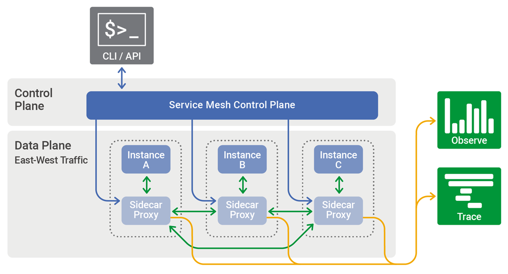

Istio Sidecar 注入机制
Jun 21, 2020
Service Mesh 及 Sidecar 概念
在了解 Sidecar 的注入机制前还是先要明确是什么和为什么的问题。
首先，Service Mesh 是什么？
Service Mesh，或者翻译为「服务网格」，是一个可配置的低延迟的基础设施层，目的是通过API（应用程序编程接口）处理应用程序服务之间的大量基于网络的进程间通信。服务网络确保容器化的短暂存在的应用程序的基础结构服务之间的通信快速，可靠和安全。网格提供关键功能，包括服务发现，负载平衡，加密，可观察性，可追溯性，身份验证和授权，以及对断路器模式的支持。其实服务网格的目的说的最简单就是「接管和治理应用程序间的通信」，其中有个最为核心的要点就是，通信，基于 Service Mesh 的服务治理就是在服务的通信或者说调用过程中「做手脚」，离开这一点，Service Mesh 毫无意义，当然，这个应用程序似乎也没有意义了。如下图所示，就是典型的 Service Mesh 基础设施层架构。

可以看到分为 Control Plane 和 Data Plane，Control Plane 的主要作用就是治理规则的控制与下发，而 Data Plane 的主要作用就是处理服务实例间的通信过程，实施指定的治理策略。Data Plane 中就可以看到今天的主角，也就是 Sidecar，正如图中标识的，Sidecar 最准确的表述应该是 「Sidecar Proxy」，它的本质是一个代理组件，这个组件会被直接注入到服务实例相同的 Network Namesapce 下，在 Kubernetes 中，就是注入到 Pod 里面，此时 Sidecar 与服务实例共享 Pod Network Namespace，可以通过 iptables 对流经实例的 inbound 和 outbound 流量进行相应的规则处理。
本文主要基于 Istio 这个 Service Mesh 实现针对 Sidecar 的注入机制进行分析。
Admission Controller 与 Admission Webhook
Sidecar 的注入依赖于 Kubernetes 的几个概念，其中比较核心的就是 Admission Controller 和 Admission Webhook。
Admission Controller，可翻译为「准入控制器」，按照官方的解释是： Admission Controller是拦截 API Server 请求(经过身份验证的)的网关，并且可以修改请求对象或拒绝请求。简而言之，它可以认为是拦截器，类似web框架中的middleware，是 Kubernetes API Server 用于拦截请求的一种手段。
Kubernetes 为什么引入 admission 这种机制？
- 虽然 Kubernetes 有 Authentication & Authorization 这种认证鉴权机制，Authentication & Authorization 运行在 filter 中，只能获取 http 请求 header 以及证书，并不能获取请求的 body。所以不可以对请求的对象进行任何操作，因为获取不到对象。
- Admission Controller 运行在 API Server 的增删改查 handler 中，可以自然地操作 API resource。
API Server 接收到客户端请求后首先进行认证鉴权，认证鉴权通过后才会进行后续的 endpoint handler 处理，kube-apiserver 处理资源请求的流程如下：

可以看到，在 Authentication & Authorization 之后请求就交由 Admission Controller 继续处理，这里涉及到 Admission 两个重要阶段，Mutating和Validating，它们的区别如下：
- Mutating：可以对请求内容进行修改；
- Validating：不允许修改请求内容，但可以根据请求的内容判断是继续执行该请求还是拒绝该请求；
Kubernetes 提供了很多内置的 Admission Controller Plugin，一些常用的准入控制策略都能找到。
# 支持的plugin 如下
AlwaysAdmit, AlwaysDeny, AlwaysPullImages,
DefaultStorageClass, DefaultTolerationSeconds, DenyEscalatingExec,
DenyExecOnPrivileged, EventRateLimit, ExtendedResourceToleration,
ImagePolicyWebhook, Initializers, LimitPodHardAntiAffinityTopology,
LimitRanger, MutatingAdmissionWebhook, NamespaceAutoProvision,
NamespaceExists, NamespaceLifecycle, NodeRestriction,
OwnerReferencesPermissionEnforcement, PersistentVolumeClaimResize,
PersistentVolumeLabel, PodNodeSelector, PodPreset, PodSecurityPolicy,
PodTolerationRestriction, Priority, ResourceQuota, SecurityContextDeny,
ServiceAccount, StorageObjectInUseProtection, ValidatingAdmissionWebhook.
Kubernetes 提供了这么多 Admission 插件， 但是并不能保证满足所有开发者的需求。因此 Kubernetes 同样允许用户自定义自己的 Admission Controller，Kubernetes 提供了 Admission Webhook 这种扩展机制。
- MutatingAdmissionWebhook：在对象持久化之前进行修改
- ValidatingAdmissionWebhook：在对象持久化之前进行
Admission Webhook 属于同步调用，需要用户开发部署自己的 webhook server，创建自定义的配置资源对象： ValidatingWebhookConfiguration 或 MutatingWebhookConfiguration。
可以说有了 Admission Webhook 这种扩展机制，才算是真正为后面 Sidecar 注入实现铺平道路。
Istio Sidecar 自动注入实现
Sidecar Injector 是 Istio 中实现自动注入Sidecar的组件，它就是以 Kubernetes 准入控制器 Admission Controller 的形式运行的。回顾前面的概念，Admission Controller 的基本工作原理是拦截 Kube-apiserver 的请求，在对象持久化之前、认证鉴权之后进行拦截。之前提到 Admission Controller有两种：一种是内置的，另一种是用户自定义的。后者就是 Kubernetes 允许用户以 Webhook 的方式自定义准入控制器，Sidecar Injector 就是这样一种特殊的 MutatingAdmissionWebhook。
Sidecar 注入的过程如下图所示：
如图，Sidecar Injector 只在创建 Pod 时进行 Sidecar 容器注入，在 Pod 的创建请求到达 Kube-apiserver 后，首先进行认证鉴权，然后在准入控制阶段，Kube-apiserver 以 REST 的方式同步调用 Sidecar Injector Webhook 服务进行 init 与 istio-proxy 容器的注入，最后将Pod对象持久化存储到etcd中。
还可以看一下 MutatingWebhookConfiguration 的配置：
kubectl get MutatingWebhookConfiguration istio-sidecar-injector -n istio-system -o yaml
istio-sidecar-injector MutatingWebhookConfiguration
apiVersion: admissionregistration.k8s.io/v1
kind: MutatingWebhookConfiguration
metadata:
annotations:
kubectl.kubernetes.io/last-applied-configuration: |
{"apiVersion":"admissionregistration.k8s.io/v1beta1","kind":"MutatingWebhookConfiguration","metadata":{"annotations":{},"labels":{"app":"sidecar-injector","install.operator.istio.io/owning-resource":"installed-state","istio.io/rev":"default","operator.istio.io/component":"Pilot","operator.istio.io/managed":"Reconcile","operator.istio.io/version":"1.6.2","release":"istio"},"name":"istio-sidecar-injector"},"webhooks":[{"clientConfig":{"caBundle":"","service":{"name":"istiod","namespace":"istio-system","path":"/inject"}},"failurePolicy":"Fail","name":"sidecar-injector.istio.io","namespaceSelector":{"matchLabels":{"istio-injection":"enabled"}},"rules":[{"apiGroups":[""],"apiVersions":["v1"],"operations":["CREATE"],"resources":["pods"]}],"sideEffects":"None"}]}
creationTimestamp: "2020-06-16T06:47:00Z"
generation: 2
labels:
app: sidecar-injector
install.operator.istio.io/owning-resource: installed-state
istio.io/rev: default
operator.istio.io/component: Pilot
operator.istio.io/managed: Reconcile
operator.istio.io/version: 1.6.2
release: istio
managedFields:
...
webhooks:
- admissionReviewVersions:
- v1beta1
clientConfig:
caBundle: LS0tLS1CRUdJTiBDRVJUSUZJQ...
service:
name: istiod
namespace: istio-system
path: /inject
port: 443
failurePolicy: Fail
matchPolicy: Exact
name: sidecar-injector.istio.io
namespaceSelector:
matchLabels:
istio-injection: enabled
objectSelector: {}
reinvocationPolicy: Never
rules:
- apiGroups:
- ""
apiVersions:
- v1
operations:
- CREATE
resources:
- pods
scope: '*'
sideEffects: None
timeoutSeconds: 30
Sidecar Injector 默认只对标签匹配 istio-injection：enabled 的命名空间下的Pod资源对象的创建生效。Webhook服务的访问路径为/inject，地址及访问凭证等都在clientConfig字段下进行配置。
Istio Sidecar Injector组件是由sidecar-injector进程实现的。Sidecar Injector 的实现主要由两部分组成：
-
MutatingWebhookConfiguration
-
Webhook Server，为应用工作负载自动注入Sidecar容器
Sidecar Injector 以轻量级 HTTPS 服务器的形式处理 Kube-apiserver 的 AdmissionRequest 请求。
通常Pod Sidecar容器的注入由以下步骤完成:
- 解析 Webhook REST 请求，将 AdmissionReview 原始数据反序列化；
- 解析 Pod，将 AdmissionReview 中的 AdmissionRequest 反序列化；
- 利用 Pod 及网格配置渲染 Sidecar 配置模板；
- 利用 Pod 及渲染后的模板创建 JSON patch；
- 构造 AdmissionResponse；
- 构造 AdmissionReview，在进行 JSON 编码后，将其发送给 HTTP 客户端即Kube-apiserver；
可以查看注入的配置项 istio-sidecar-injector：
kubectl describe configmap istio-sidecar-injector -n istio-system
istio-sidecar-injector configmap (简略版本)
Name: istio-sidecar-injector
Namespace: istio-system
Labels: install.operator.istio.io/owning-resource=installed-state
istio.io/rev=default
operator.istio.io/component=Pilot
operator.istio.io/managed=Reconcile
operator.istio.io/version=1.6.2
release=istio
Annotations:
Data
====
config:
----
policy: enabled
...
template: |
rewriteAppHTTPProbe: {{ valueOrDefault .Values.sidecarInjectorWebhook.rewriteAppHTTPProbe false }}
initContainers:
...
- name: istio-validation
...
- name: istio-init
...
args:
- istio-iptables
- "-p"
- 15001
...
containers:
- name: istio-proxy
ports:
- containerPort: 15090
protocol: TCP
name: http-envoy-prom
args:
...
env:
- name: JWT_POLICY
value: {{ .Values.global.jwtPolicy }}
...
ConfigMap 保存了默认注入策略（policy）和 sidecar 注入模板（template）。 策略（policy）:
- disabled：sidecar 注入器默认不会注入到 pod 中。添加pod模板定义中的注解 sidecar.istio.io/inject 值为 true会启用注入功能。
- enabled：sidecar 注入器默认会注入到 pod 中。添加pod模板定义中的注解 sidecar.istio.io/inject 值为 false会禁止注入功能。
参考
- http://dockone.io/article/8975
- https://cloud.tencent.com/developer/article/1445760
- https://www.dazhuanlan.com/2019/12/10/5deec157cba32/
- https://www.codercto.com/a/27364.html
- https://blog.csdn.net/weixin_34014277/article/details/89570351
- https://developer.aliyun.com/article/620700
- 《云原生服务网格 Istio: 原理、实践、架构及源码解析》张超盟